Wybierz spokojne miejsce
Przygotuj pusty, dobrze oświetlony stół. Rozłóż części, a zapasowe elementy odłóż razem.
PRZYGOTOWANA Z TROSKĄ. ZŁOŻYMY JĄ RAZEM.
Poznaj swoją ortezę dłoni, krok po kroku. W paczce znajdziesz różne rozmiary i części zapasowe. Nie musisz wykorzystać wszystkiego.
Przejdź do instrukcjiBez pośpiechu. Druga para rąk mile widziana.
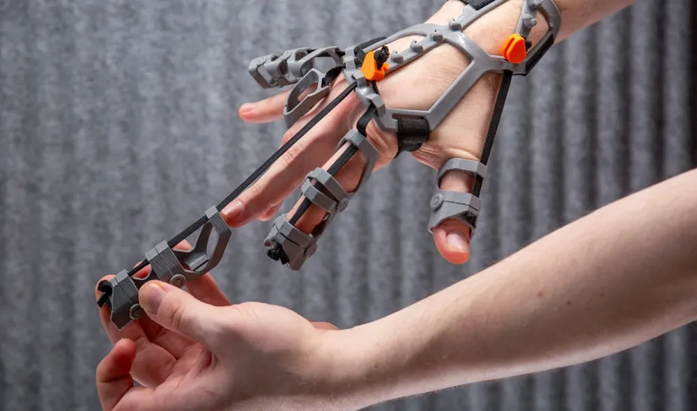
Małymi krokami,01 / NA DOBRY POCZĄTEK
Ten zestaw wydrukowano w 3D z Bambu Lab PLA Basic. Poproś terapeutę ręki o ocenę, czy orteza jest odpowiednia, oraz pokazanie rodzinie sposobu dopasowania, ustawienia naciągu i zaleconego czasu noszenia.
Przygotuj pusty, dobrze oświetlony stół. Rozłóż części, a zapasowe elementy odłóż razem.
Sprawdź, czy nie ma pęknięć, ostrych krawędzi ani uszkodzonych pasków. Odłóż uszkodzone części przed dopasowaniem.
Nigdy nie ustawiaj dłoni ani palców na siłę. Stosuj ułożenie i naciąg pokazane przez terapeutę.
02 / POZNAJMY CZĘŚCI
Procenty oznaczają skalę wydruku, a nie wymiary dłoni. Rozmiar sprawdzaj według skali wydruku. Różne rozmiary mają te same kolory.
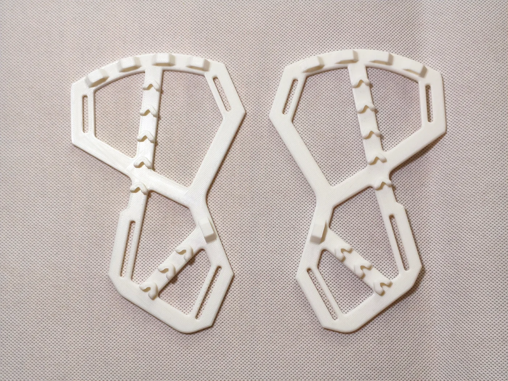
Powiększ ↗Dwie białe części główne, po jednej na każdą dłoń. Skala wydruku zgodna z listą zawartości.
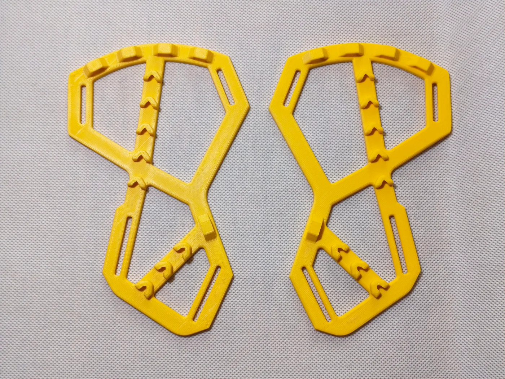
Powiększ ↗Dwie żółte części główne, po jednej na każdą dłoń. Skala wydruku zgodna z listą zawartości.
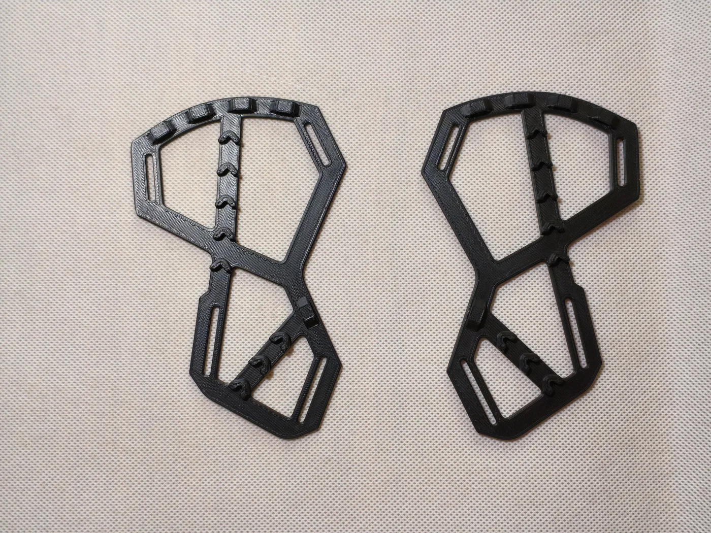
Powiększ ↗Dwie czarne części główne, po jednej na każdą dłoń. Skala wydruku zgodna z listą zawartości.
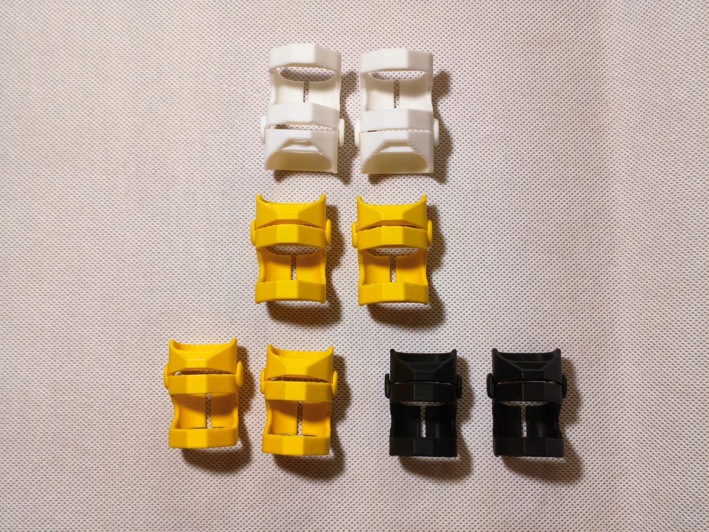
Powiększ ↗Warianty białe, żółte i czarne. Lista zawartości obejmuje skale 100%, 90% i 80%.
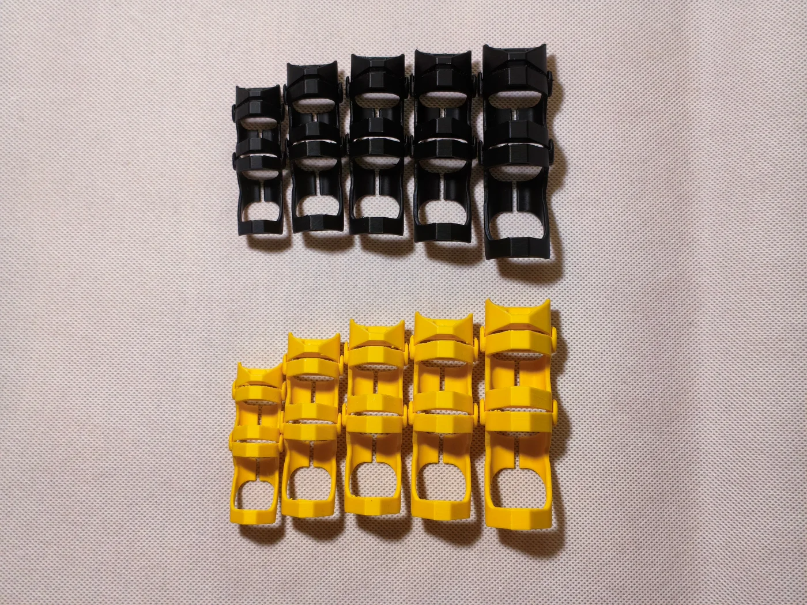
Powiększ ↗Przykłady w kolorze żółtym i czarnym. W paczce jest łącznie 20 osłon palców; zdjęcie nie pokazuje wszystkich zapasowych sztuk. Na zdjęciu nie oznaczono dokładnych skal.
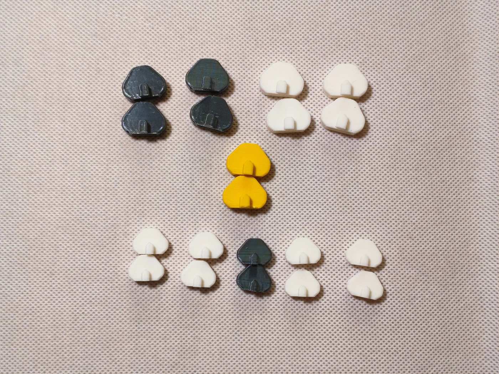
Powiększ ↗Dwie grupy uchwytów w kolorze białym, czarnym i żółtym. Dobierz uchwyty do skali części głównej: 100% lub 80%.
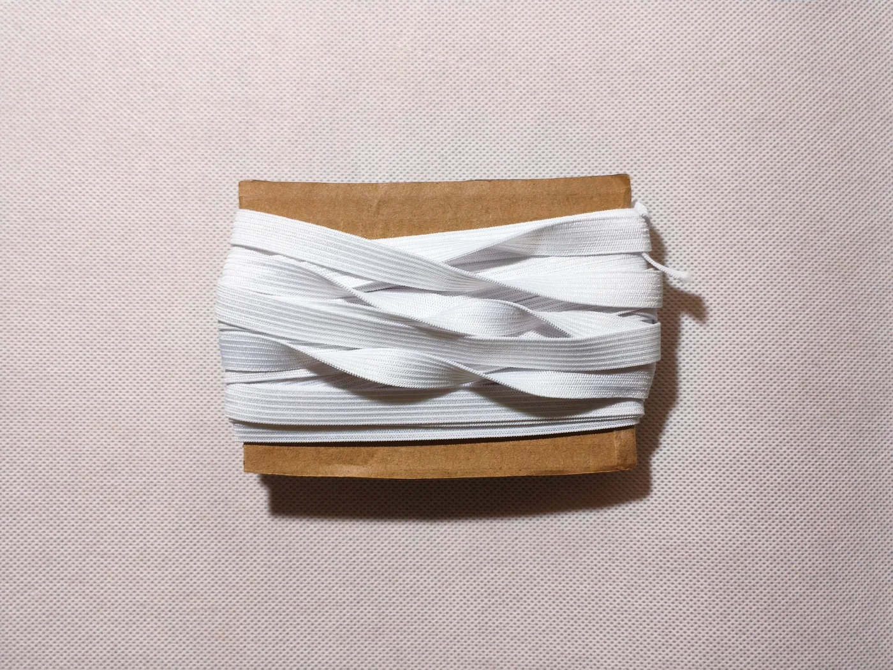
Powiększ ↗W paczce jest pełna szpula białej gumki. Odcinki trzeba przyciąć na długość oraz zwęzić do otworów. Do mocowania przy dłoni i przedramieniu służą osobne paski z rzepem.
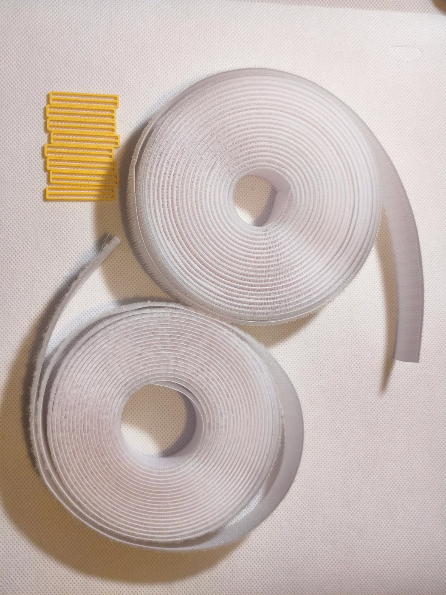
Powiększ ↗Jedna rolka z haczykami i jedna z miękkimi pętelkami. Odcinki dotnij do dłoni i przedramienia.
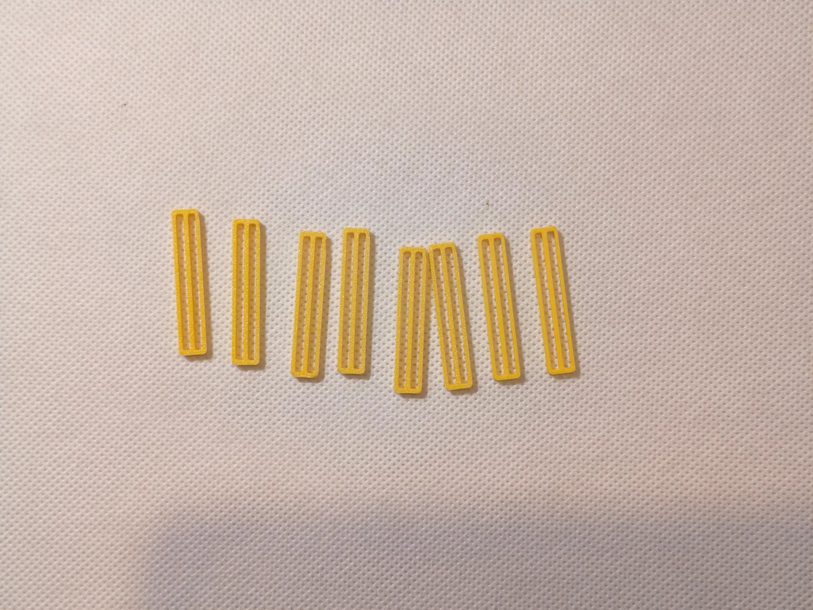
Powiększ ↗Osiem żółtych prostokątnych łączników. Służą do łączenia taśm lub ograniczania ich przesuwania; nie są uchwytami gumek palców.
Para oznacza 2 uchwyty. „4 żółte i czarne” oznacza 2 żółte sztuki + 2 czarne sztuki. Dodatkowe rozmiary służą do dopasowania, a powtórzone części są zapasem.
03 / KROK PO KROKU
Część główna podpiera okolicę nadgarstka. Gumki łączą ją z osłonami palców i kciuka, zapewniając regulowane wspomaganie. Paski z rzepem przy dłoni i przedramieniu utrzymują część główną na miejscu.
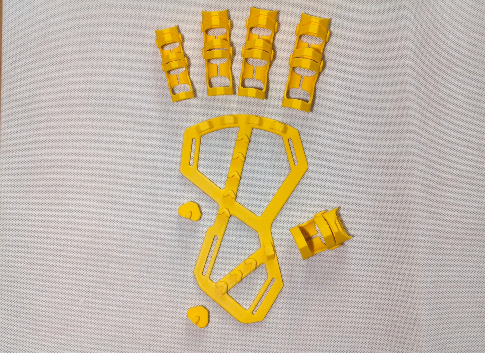
TWOJE CZĘŚCI PRZED MONTAŻEM
Zdjęcie pokazuje części przed dołączeniem gumek i pasków z rzepem. Ich montaż opisują kroki 3 i 4.
Oddziel części główne na lewą i prawą dłoń, a następnie rozmiary 100% i 80%. Pary uchwytów trzymaj z oznaczeniem skali odpowiadającej części głównej.
Pogrupuj osłony palców i kciuka według oznaczonych rozmiarów. Dobierz zestaw zgodnie z oceną terapeuty; skale poszczególnych osłon nie muszą być jednakowe.
Autor wskazuje płaski stabilizator nadgarstka jako część przeznaczoną do formowania. Podgrzewać można wyłącznie tę oddzielną część główną. Wszystkie osłony, uchwyty i paski pozostają z dala od źródła ciepła.
Autor opisuje formowanie w gorącej wodzie lub przez delikatne podgrzewanie, ale nie podaje zweryfikowanej temperatury wody ani czasu zanurzenia dla Twojego konkretnego wydruku z PLA.
Poniżej pokazano płaską część główną. Przed formowaniem ustal z terapeutą temperaturę, czas, sposób chłodzenia i ułożenie dłoni. Film jest pokazem techniki, nie potwierdzoną procedurą dla tego wydruku. Jeśli nie masz ustalonej metody, pomiń podgrzewanie i poproś o pomoc w dopasowaniu.
Użyty filament to Bambu Lab PLA Basic. Karta techniczna producenta podaje temperaturę zeszklenia 60°C, mięknienia Vicata 57°C oraz ugięcia pod obciążeniem 0,45 MPa 57°C.
To wyniki badań materiału, nie zalecana temperatura wody ani bezpieczna temperatura kontaktu ze skórą. Wskazują na podatność PLA na odkształcenie po ogrzaniu, ale nie potwierdzają czasu zanurzenia ani metody dopasowania tej ortezy. 70°C widoczne w filmie pozostaje parametrem pokazu MITHRIL, a nie zweryfikowaną instrukcją dla tego zestawu.
Źródło: Bambu Lab PLA Basic, karta techniczna V3.0, sprawdzono 16.09.2026.
Film pokazuje kolejno podgrzewanie części w wodzie, osuszenie i formowanie na ręce. Dotyczy ortezy MITHRIL stabilizującej nadgarstek. Traktuj go jako pokaz techniki: zgodność pokazanego materiału i parametrów z PLA użytym w Twoim zestawie nie została potwierdzona.
Obejrzyj pokaz formowania krok po kroku ↗W paczce jest pełna szpula gumki o szerokości 10 mm. Przygotuj nożyczki, nożyk, linijkę i podkładkę do cięcia. Użyj uchwytów pasujących do wybranego rozmiaru części głównej.
Odetnij osobny odcinek dla każdego z czterech palców i jeden dla kciuka. Dopasuj długość do odległości między osłoną a uchwytem, zostawiając zapas na węzły i regulację.
Jeśli gumka 10 mm jest za szeroka, przytnij ją wzdłuż, aby przechodziła przez otwory osłony palca i części głównej. Szerokość dobierz do rzeczywistych otworów wybranego wydruku; nie wciskaj jej na siłę.
Przed cięciem wyjmij gumkę z ortezy i połóż ją na podkładce. Prowadź ostrze z dala od palców. Po zwężeniu sprawdź, czy gumka nie pruje się i zachowuje sprężystość; uszkodzony odcinek odłóż.
Kciuk → osobna gumka → osobny uchwyt.
Paski z rzepem zamocuj zgodnie z krokiem 4.
Projektant zasadniczo zaleca, aby nie skalować oryginalnego pliku elementu regulującego naciąg. W zestawie są różne skale uchwytów, dlatego przed użyciem sprawdź zgodność uchwytu z częścią główną.
Masz dwie rolki: rzep z haczykami i rzep z pętelkami, oraz 8 żółtych łączników. Przygotuj dwa mocowania: jedno przy dłoni, drugie przy przedramieniu. Ich długości dobierz osobno.
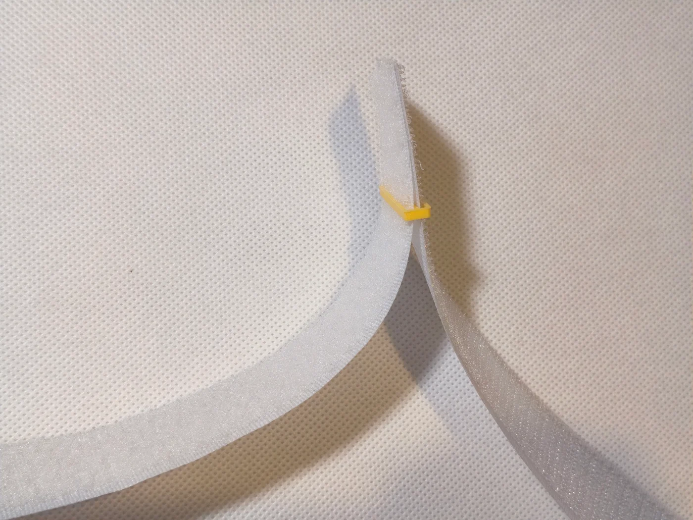
Jeśli nie łączysz taśm w powyższy sposób, możesz użyć łączników do ograniczania przesuwania pasków, jak na zdjęciu poniżej. Zapnij pasek, łącząc haczyki z pętelkami. Łączniki ograniczają przesuwanie taśmy, ale same nie tworzą zapięcia.
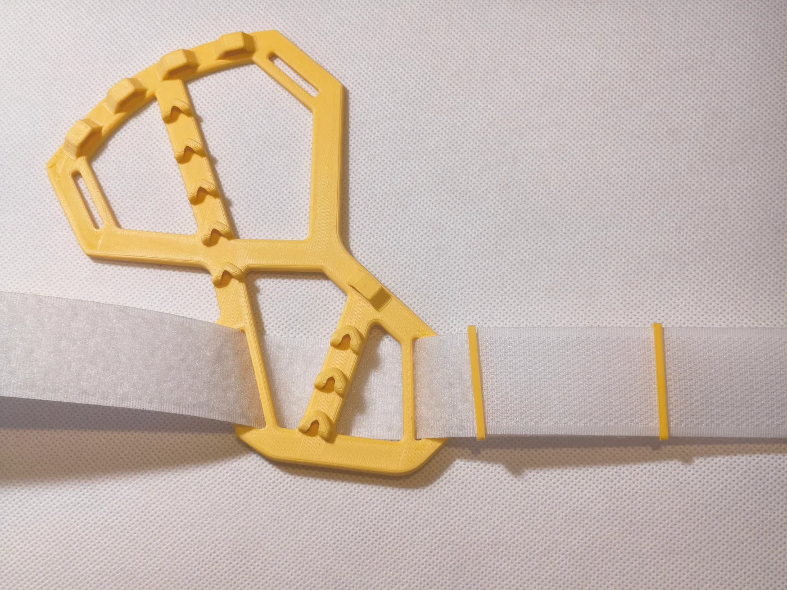
Poproś terapeutę o pokazanie docelowego ułożenia osłon, zapięcia nadgarstka i naciągu gumek na złożonym zestawie. Nie zwiększaj naciągu, aby na siłę prostować palce.
Naciąg i czas noszenia dobierz zgodnie z indywidualnymi zaleceniami terapeuty.
04 / DBAJ O ORTEZĘ NA CO DZIEŃ
Obejrzyj skórę oraz sprawdź wydruk, uchwyty i gumki pod kątem zużycia. Przestrzegaj zaleceń terapeuty dotyczących czasu noszenia. Nie używaj pękniętych ani uszkodzonych części.
Delikatnie przetrzyj części z PLA wilgotną ściereczką i osusz je. Chroń zestaw przed gorącą wodą, grzejnikami, nagrzanym samochodem i bezpośrednim działaniem ciepła. Przed czyszczeniem odepnij paski. Stosuj zalecenia producenta taśmy; przed ponownym założeniem wszystkie elementy powinny być suche.
Ogólne zalecenia dotyczące skóry i pasków: terapia ręki UHCW oraz University Hospitals Sussex. Są to ogólne zalecenia dotyczące pielęgnacji ortez, a nie potwierdzenie bezpieczeństwa tego drukowanego projektu.
Instrukcja przygotowania ortezy dłoni
Zeskanuj aparatem telefonu.
Zanim zaczniesz, przeczytaj zasady bezpieczeństwa i dopasowania.